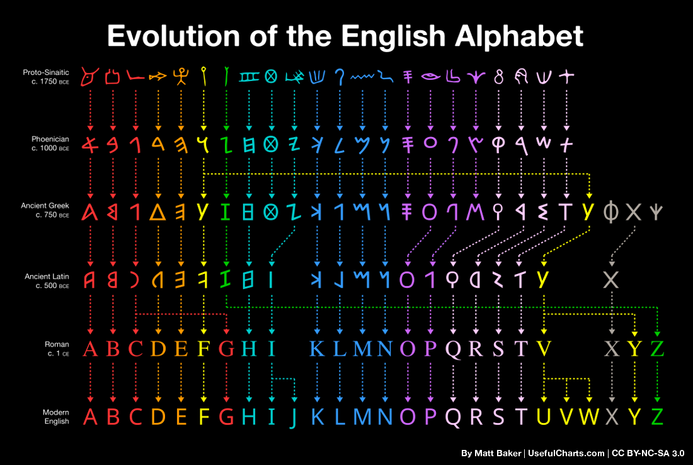

Hello World
CodeTengu Weekly 碼天狗週刊
如果命運的齒輪沒有出差錯，CodeTengu Weekly 都會在 UTC+8 時區的每個禮拜一 AM 10:00 出刊。每週會由三位 curator 負責當期的內容，每個 curator 有各自擅長的領域，如果你在這一期沒有看到感興趣的東西，可能下一期就有了。當然你也可以瀏覽一下前幾期的內容。
目前的 curator 陣容：
- @vinta - I failed the Turing Test - 科幻迷，最近在讀 Dirk Gently 系列
- @saiday - Imnotyourson - 電量給我這種人用就是一種浪費
- @tzangms - Oceanic / 人生海海 - 最近真的都在玩薩爾達
- @fukuball - ImFukuball - 有新工作了，但歡迎直接挖角
- @mingderwang - Ethereum enthusiast
- @kako0507 - 熱愛嘗試新事物的前端工程師
- @chiahsien - 我們又要找 iOS 工程師啦！
- @uranusjr - Smaller Things - PyCon Taiwan 熱烈售票中。Shadowverse: uranusjr
- @kkdai - 態度萬歲 - Learning Deeply....
- @yhsiang
- @johnlinvc - 挑戰自動化家中電器
- @drumrick - 歡迎加入台灣 Kaggle 交流區
- @wancw
- @allanlei
你也可以關注我們的 Facebook、Twitter、GitHub 或 Open Source 專案，有很多 weekly 看不到的內容。有任何建議也歡迎來 Gitter 聊聊。
 @uranusjr
@uranusjr
PyCon Taiwan 2018 開始售票辣！
今年 PyCon Taiwan 會在 6/1–2 在老地方中研院舉辦，要來的記得買票。今年早鳥維持 2,500 減量不減價 先搶先贏，太晚的就只能買貴票了喔喔喔。我們今年同樣有財務補助活動，可以憑搭乘證明申請交通補助，外地參加者請多多利用，我們很期待看到更多台北以外的會眾 ><
另外今年同樣會有 tutorial，兩場在高雄兩場在台北，敬請關注相關情報。
A Brief Totally Accurate History Of Programming Languages
簡單（但是保證準確）的程式語言史。可以看看你最喜歡的語言是什麼時候出現在這個世上的。說不定有些部份還會讓你很驚訝呢。你知道 Java 比 JavaScript、Python、甚至 Ruby 都還年輕嗎？ 你知道為什麼 Lua 的 index 是 1-based 嗎（大誤）
History of the browser user-agent string
繼續歷史相關的主題，這篇文章帶你走過瀏覽器 user-agent 的歷史，試圖理解為什麼現在每家瀏覽器的 user-agent 完全莫名其妙，幾乎毫無用途，而且大家都假裝自己是別人。
專業秘訣：不要忘想用 user-agent 判斷使用者究竟是用什麼瀏覽器。如果你真的要根據瀏覽器支援的功能進行邏輯判斷，請使用 feature detection 判斷客戶端的特性，而不是瀏覽器種類本身。

Evolution of the English Alphabet
說到歷史就想到最近看到這個列出英文字母起源的表格。好像還是第一次有人這樣全部做出來，好想買一張回家掛！如果你有興趣知道「為什麼」會這樣演變，或者想多看一下古英語（Old English）使用，但是現在已被廢除的字母，也可以看看作者做的 YouTube 影片，實在是很不錯。
喔順帶一提，如果你對人類語言，或者英語的歷史有興趣，我最近又重新熟悉了一次大元音轉移（Greate Vowel Shift）。看完之後你就知道為什麼英語發音那麼沒道理了。然後可能也會對這個沒道理背後的道理有點概念。可能吧，畢竟真的沒道理。
我有提過我很愛研究語言嗎？有興趣的歡迎一起來討論啊 ╭( ･ㅂ･)و
 @kkdai
@kkdai
teh-cmc/go-internals: A book about the internals of the Go programming language.
關於 Golang 內部實現的電子書，目前進度到第二章．裡面談到使用 interface 與內部如何實現． 並且可以深入了解使用 interface 可能帶來效能上的犧牲以及內部實作的細節． 相當硬派的書啊....
Line of sight in code – Mat Ryer – Medium
一篇很好的建議，可以讓你的 go code 變得更漂亮，更容易閱讀。 裡面講解到很細，舉凡:
- error 處理方式如何變得更漂亮
- 要讓你的 if 判斷句能夠精簡
- 讓 switch/select 直接變成 function
這些方式可以讓你的 code 變得更美，以後回來通靈 (?) 也會比較順暢..
Running a Keras / TensorFlow Model in Golang - Tony Truong
在 Deep Learning 上面，透過 Python 跟 Keras 與 Tensorflow 來進行． 這篇文章相當有趣，我們可以透過 Golang 來跑 model inference ． 有興趣想要透過 Golang 來進行 Deep Learning 的人可以看看
Go on very small hardware (Part 1) | Michał Derkacz
在非常小的裝置上面使用 Golang ? 透過 transpile C 的方式來將你原先 Go 的開發部署到相當小的裝置上
[Slides] Consistent Hashing: Algorithmic Tradoffs
這一篇投影片的整理是根據 Damian Gryski 在他 Medium 裡面文章 的整理．
裡面主要是透過整理來談 Consistent Hashing 主要要解決的問題，與先天設計上可能有的一些問題．之後 Google 發表了 Jump Hashing 來解決相關的限制．
並且還有在他們的 Load balance 有使用到的 Maglev Hashing ，這一篇投影片會講解原理跟優缺點比較．
有興趣相關演算法的人可以來看看....
 @drumrick
@drumrick
Kaggle 5-Day Challenge: Data Cleaning
根據 Google 搜尋結果顯示，Kaggle 從去年十月開始了這種 5-Day Challenge 系列教學，內容基礎而精簡，主題則相當多樣化，有講解公式的、有講解演算法的、有視覺化的，還有這次的 Data Cleaning。教學的形式其實就是以 Kaggle Kernel 的方式呈現，讓有心學習的人能一邊學習一邊操作，這次的教學可以從上面的連結開始，如果有興趣參考過去的 5-Day Challenge，可以在 Rachael 的 Kernel 中搜尋 "Challenge" 就可以找到。
不知道是不是教學迴響很好，或是 Data Cleaning 一直都是大家心中的痛，在上週，Rachael 還在 twitter 上跟大家募集『很髒』的資料集，搞不好這個 Challenge 還會有續集？
Kaggle Q1 產品更新說明
Kaggle 2018 年動作頻繁，發佈了好幾個實用的功能，例如：
- 可以建立 private dataset
- Kernel 更新
- 運算資源提高到 6 小時，而且可以 pip install 了
- 協作分享
主要就是把一般的工作流程整起來，方便引誘你使用 Kaggle 的平台。
在其他更新中有兩點：
- 正式發布了在 #114 提到的 Kaggle Learn，比起一月底多了 Pandas 和 SQL 這兩個主題。關於 Kaggle Learn 這邊有兩邊心得文可以看看：簡中 / 繁中
- 目前有 14 個公開的資料集整合 BigQuery，在 Kaggle 中的實際用法可以參考 Kaggle Learn 的 SQL 課程。
了解一下 Google Art & Culture 在幹嘛
一時興起了解一下 Google Art & Culture 都在幹嘛，文中會提及幾個 Google Art & Culture 最近的專案，都是將影像相關的機器學習技術與藝術作品結合的應用，未來有機會的話會持續關注這個領域。